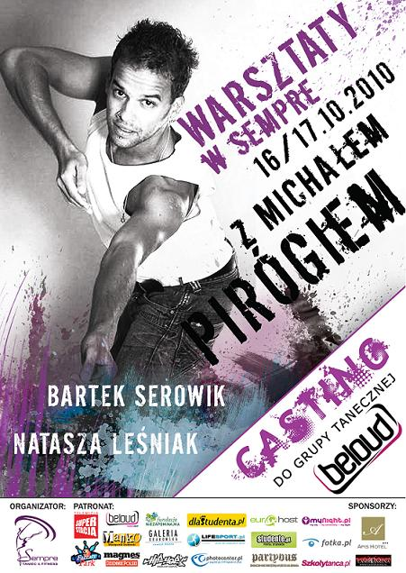

W dniach 16 - 17 października, zapraszamy wszystkich na warsztaty taneczne Tańca Współczesnego z udziałem Michała Piróga - jednego z najlepszych i najbardziej znanych polskich tancerzy!!
Dodatkowo przygotowaliśmy dla Was zajęcia z Bartkiem Serowikiem - choreografem, tancerzem i wykładowcą tańca współczesnego oraz Nataszą Leśniak - instruktorem jazz'u,modern jazz'u i contemporary.
UWAGA!
Po niedzielnych warsztatach tanecznych zapraszamy do udziału w CASTINGU do zespołu tanecznego Beloud !
INSTRUKTORZY:
Michał Piróg - instruktor na wielu prestiżowych warsztatach tanecznych i aktorskich organizowanych przez sceny teatrów muzycznych, teatrów tańca oraz szkół musicalowych.
Tancerz technik: jazz, modern jazz, afro jazz, taniec współczesny, funky jazz,broadway jazz.
Współpracował z teatrami w Polsce, Belgii, Francji, Izraelu, Słowacji, Szwajcarii, Grecji, Stanach Zjednoczonych.
Doświadczenie zdobywał w produkcjach telewizyjnych i teatralnych, m.in. w musicalu Chicago w Teatrze Komedia w Warszawie i musicalu Andrew Lloyda Webbera Koty w warszawskim Teatrze Muzycznym Roma.
Jeden z trzech jurorów programu rozrywkowego TVN You Can Dance.
Natasza Leśniak - tancerka, nauczycielka tańca, menadżer kultury.
Ukończyła szkołę baletową przy Operze i Operetce w Krakowie (2000r.) i zajęła się tańcem współczesnym.
Występowała na scenie Teatru im. J. Słowackiego w Krakowie, współpracowała z grupą baletową Art Color Balet, która specjalizuje się w afro dance i body painting balet.
Od 2004r. związana jest z zespołem Scena Tańca Współczesnego pod kierownictwem choreografa Anity Podkowy-Brańki.
Ma na swoim koncie nagrodę za zwycięstwo w programie telewizyjnym pt. "W rytmie MTV"
Brała udział w licznych warsztatach tanecznych w kraju i za granicą, min.: